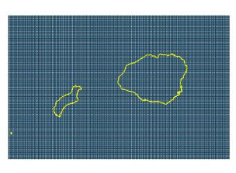
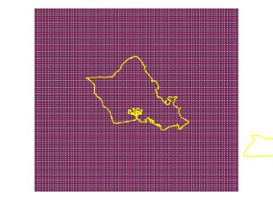
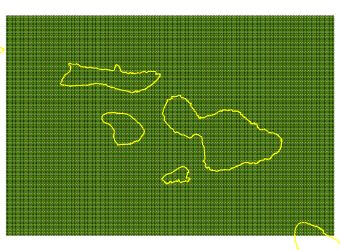
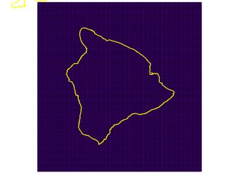

|  |  |  |  |
Grid size: 1km
| Grid | D | E | F | G |
|---|---|---|---|---|
| Islands | Kauai, Niihau | Oahu | Molokai, Maui, Lanai, Kahoolawe | Hawai'i |
| Grid Dimensions | 165 by 116 | 131 by 127 | 205 by 147 | 198 by 218 |
| N(Cells) | 19140 | 16637 | 30135 | 43164 |
| Grid Images | D_Grid.png | E_Grid.png | F_Grid.png | G_Grid.png |
| KML Files | D_Georef.kml | E_Georef.kml | F_Georef.kml | G_Georef.kml |
| Grid Point Location Files | D_Georef.csv | E_Georef.csv | F_Georef.csv | G_Georef.csv |
(If Google Earth does not start when clicking on one of the KML files, right click the link, save the file and start Google Earth manually.)
Each data file is 14,757,120 bytes and there are 109076 files for a total data volume of 1.61 terabytes. Files are not compressed, but if space is an issue, they can be compressed to about 30% of their original size.
File Naming Convention:
IVAL_JVAL.HAWAII.GRIDVAL.txt
IVAL = W to E point within model grid
JVAL = S to N point within model grid
GRIDVAL = Grid Identifier:
D - Kauai Grid
E - Oahu Grid
F - Maui Grid
G - Hawaii Grid
Example File Name -> 0005_0005.HAWAII.D.txt
The latitude and longitude of each grid point can be
found in the corresponding grid georeference files:
D_Georef.csv
E_Georef.csv
F_Georef.csv
G_Georef.csv
Site elevation is not stored in any of the data or index files. If it is needed for any calculations
(e.g., wind power density), it will have to be obtained from a separate data base.
Each file contains 2 years (2007-2008) of 10-minute data (105408 records).
Data Fields in Time Series Files:
DATE ,TIME,TSFC ,PSFC ,PCP ,Q2M ,DSWRF ,DLWRF ,T10 ,S10 ,W10,T50 ,S50 ,W50,T80 ,S80 ,W80,T100 ,S100 ,W100,T200 ,S200 ,W200
20070101,0000,298.57,1015.20, 0.00,16.73, 686.0, 419.7,297.07, 6.87,096,296.65, 7.34,096,296.36, 7.54,096,296.16, 7.66,096,295.20, 8.10,096
Where,
DATE - Date
TIME - Time (Greenwich Mean Time)
TSFC - Surface Skin Temperature (K)
PSFC - Surface Pressure (mb)
PCP - Accumulation Precipitation (mm or kg/m^2)
Q2M - Specific Humidity at 2M Above Ground Level (g/kg)
DSWRF - Downward Shortwave Radiation Flux (W/m^2)
DLWRF - Downward Longwave Radiation Flux (W/m^2)
T10 - Temperature at 10M Above Ground Level (K)
S10 - Wind Speed at 10M Above Ground Level (m/s)
W10 - Wind Direction at 10M Above Ground Level (Degrees)
T50 - Temperature at 50M Above Ground Level (K)
S50 - Wind Speed at 50M Above Ground Level (m/s)
W50 - Wind Direction at 50M Above Ground Level (Degrees)
T80 - Temperature at 80M Above Ground Level (K)
S80 - Wind Speed at 80M Above Ground Level (m/s)
W80 - Wind Direction at 80M Above Ground Level (Degrees)
T100 - Temperature at 100M Above Ground Level (K)
S100 - Wind Speed at 100M Above Ground Level (m/s)
W100 - Wind Direction at 100M Above Ground Level (Degrees)
T200 - Temperature at 200M Above Ground Level (K)
S200 - Wind Speed at 200M Above Ground Level (m/s)
W200 - Wind Direction at 200M Above Ground Level (Degrees)
For more information, contact G. Scott at george.scott@nrel.gov
{kind=link}
{kind=link}
{kind=link}
{kind=link}